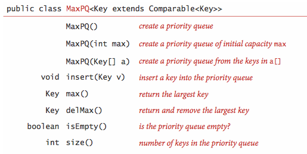
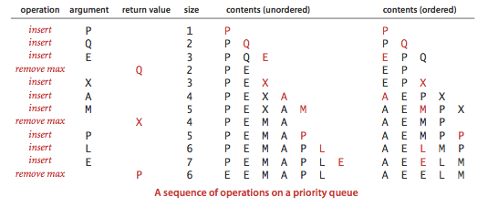
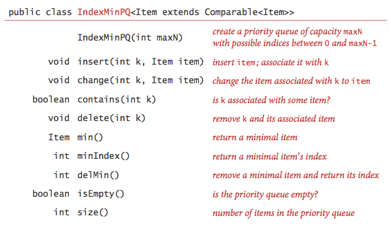
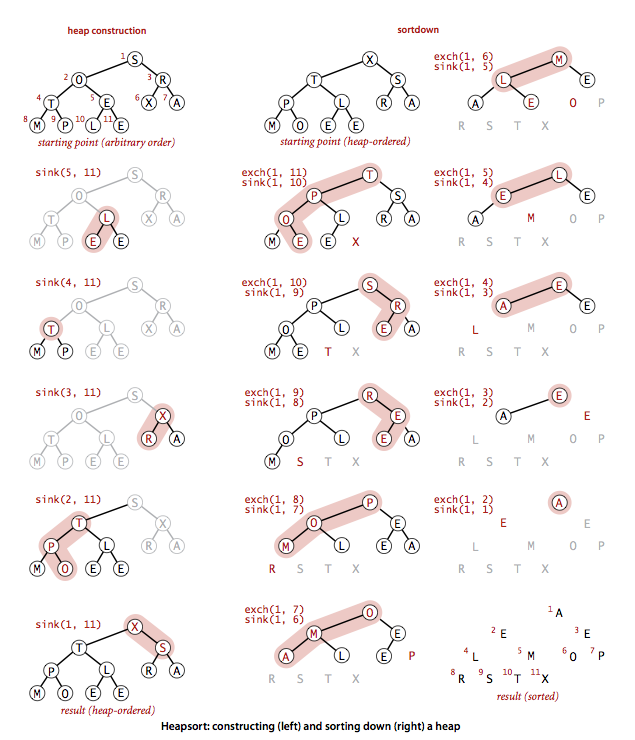

Priority Queues
Many applications require that we process items having keys in order, but not necessarily in full sorted order and not necessarily all at once. Often, we collect a set of items, then process the one with the largest key, then perhaps collect more items, then process the one with the current largest key, and so forth. An appropriate data type in such an environment supports two operations: remove the maximum and insert. Such a data type is called a priority queue.
§ API.
Priority queues are characterized by the
remove the maximum and insert operations.
By convention, we will compare keys only with a less() method,
as we have been doing for sorting. Thus, if records can have duplicate keys,
maximum means any record with the largest key value.
To complete the API, we also need to add constructors
and a test if empty operation.
For flexibility, we use a generic implementation with a generic type
Key that implements Comparable.

Program TopM.java is a priority queue client that takes a command-line argument M, reads transactions from standard input, and prints out the M largest transactions.
§ Elementary implementations.
The basic data structures that we discussed in Section 1.3 provide us with four immediate starting points for implementing priority queues.
- Array representation (unordered).
Perhaps the simplest priority queue implementation is based on our code for
pushdown stacks. The code for insert
in the priority queue is the same as for push in the stack.
To implement remove the maximum, we can add code like
the inner loop of selection sort to exchange the maximum item
with the item at the end and then delete that one, as we did with
pop()for stacks. Program UnorderedArrayMaxPQ.java implements a priority queue using this approach. - Array representation (ordered). Another approach is to add code for insert to move larger entries one position to the right, thus keeping the entries in the array in order (as in insertion sort). Thus the largest item is always at the end, and the code for remove the maximum in the priority queue is the same as for pop in the stack. Program OrderedArrayMaxPQ.java implements a priority queue using this approach.
- Linked-list representations (unordered and reverse-ordered).
Similarly, we can start with our linked-list code for pushdown stacks,
either modifying the code for
pop()to find and return the maximum or the code forpush()to keep items in reverse order and the code forpop()to unlink and return the first (maximum) item on the list.

All of the elementary implementations just discussed have the property that either the insert or the remove the maximum operation takes linear time in the worst case. Finding an implementation where both operations are guaranteed to be fast is a more interesting task, and it is the main subject of this section.
§ Heap definitions.
The binary heap is a data structure that can efficiently support the basic priority-queue operations. In a binary heap, the items are stored in an array such that each key is guaranteed to be larger than (or equal to) the keys at two other specific positions. In turn, each of those keys must be larger than two more keys, and so forth. This ordering is easy to see if we view the keys as being in a binary tree structure with edges from each key to the two keys known to be smaller.
Definition. A binary tree is heap-ordered if the key in each node is larger than (or equal to) the keys in that nodes two children (if any).
Proposition. The largest key in a heap-ordered binary tree is found at the root.
We can impose the heap-ordering restriction on any binary tree. It is particularly convenient, however, to use a complete binary tree like the one below.

We represent complete binary trees sequentially within an array by putting the nodes with level order, with the root at position 1, its children at positions 2 and 3, their children in positions 4, 5, 6 and 7, and so on.
Definition. A binary heap is a set of nodes with keys arranged in a complete heap-ordered binary tree, represented in level order in an array (not using the first entry).

In a heap, the parent of the node in position k is in position k/2; and, conversely, the two children of the node in position k are in positions 2k and 2k + 1. We can travel up and down by doing simple arithmetic on array indices: to move up the tree from a[k] we set k to k/2; to move down the tree we set k to 2*k or 2*k+1.
§ Algorithms on heaps.
We represent a heap of size n in private array
pq[] of length n + 1, with pq[0] unused and the heap
in pq[1] through pq[n]. We
access keys only through private helper functions less()
and exch().
The heap operations that we consider work by first making a
simple modification that could violate the heap condition, then traveling through
the heap, modifying the heap as required to ensure that the heap condition is satisfied
everywhere. We refer to this process as reheapifying, or
restoring heap order.
- Bottom-up reheapify (swim).
If the heap order is violated because a node's key becomes larger than
that node's parents key, then we can make progress toward fixing the
violation by exchanging the node with its parent. After the exchange, the node is larger
than both its children (one is the old parent, and the other is smaller than
the old parent because it was a child of that node)
but the node may still be larger than its parent.
We can fix that violation in the same way, and so forth, moving up the heap until we
reach a node with a larger key, or the root.

private void swim(int k) { while (k > 1 && less(k/2, k)) { exch(k, k/2); k = k/2; } } - Top-down heapify (sink).
If the heap order is violated because a node's key becomes
smaller than one or both of that node's children's keys, then we can make progress
toward fixing the violation by exchanging the node with the larger of its two children.
This switch may cause a violation at the child; we fix that violation in the same way,
and so forth, moving down the heap until we reach
a node with both children smaller, or the bottom.

private void sink(int k) { while (2*k <= N) { int j = 2*k; if (j < N && less(j, j+1)) j++; if (!less(k, j)) break; exch(k, j); k = j; } }

 Heap-based priority queue.
Heap-based priority queue.
These sink() and swim()
operations provide the basis for efficient implementation of the priority-queue API,
as diagrammed below and implemented in MaxPQ.java and
MinPQ.java.
- Insert. We add the new item at the end of the array, increment the size of the heap, and then swim up through the heap with that item to restore the heap condition.
- Remove the maximum. We take the largest item off the top, put the item from the end of the heap at the top, decrement the size of the heap, and then sink down through the heap with that item to restore the heap condition.

Proposition. In an n-item priority queue, the heap algorithms require no more than 1 + lg n compares for insert and no more than 2 lg n compares for remove the maximum.
Practical considerations.
We conclude our study of the heap priority queue API with a few practical considerations.
- Multiway heaps. It is not difficult to modify our code to build heaps based on an array representation of complete heap-ordered ternary or d-ary trees. There is a tradeoff between the lower cost from the reduced tree height and the higher cost of finding the largest of the three or d children at each node.
- Array resizing.
We can add a no-argument constructor, code for array doubling in
insert(), and code for array halving indelMax(), just as we did for stacks in Section 1.3. The logarithmic time bounds are amortized when the size of the priority queue is arbitrary and the arrays are resized. - Immutability of keys. The priority queue contains objects that are created by clients but assumes that the client code does not change the keys (which might invalidate the heap invariants).
- Index priority queue.
In many applications, it makes sense to allow clients to refer to
items that are already on the priority queue.
One easy way to do so is to associate a unique integer index with each item.

IndexMinPQ.java is a heap-based implementation of this API; IndexMaxPQ.java is similar but for maximum-oriented priority queues. Multiway.java is a client that merges together several sorted input streams into one sorted output stream.
§ Heapsort.
We can use any priority queue to develop a sorting method. We insert all the keys to be sorted into a minimum-oriented priority queue, then repeatedly use remove the minimum to remove them all in order. When using a heap for the priority queue, we obtain heapsort.
Focusing on the task of sorting, we abandon the notion of hiding
the heap representation of the priority queue and use
swim() and sink() directly.
Doing so allows us to sort an array without needing
any extra space, by maintaining the heap within the
array to be sorted.
Heapsort breaks into two phases: heap construction,
where we reorganize the original array into a heap, and the
sortdown, where we pull the items out of the heap in
decreasing order to build the sorted result.
- Heap construction.
We can accomplish this task in time proportional to n lg n,by proceeding
from left to right through the array, using
swim()to ensure that the entries to the left of the scanning pointer make up a heap-ordered complete tree, like successive priority queue insertions. A clever method that is much more efficient is to proceed from right to left, usingsink()to make subheaps as we go. Every position in the array is the root of a small subheap;sink()works or such subheaps, as well. If the two children of a node are heaps, then callingsink()on that node makes the subtree rooted there a heap. - Sortdown. Most of the work during heapsort is done during the second phase, where we remove the largest remaining items from the heap and put it into the array position vacated as the heap shrinks.

Heap.java is a full implementation of heapsort. Below is a trace of the contents of the array after each sink.

Proposition.
Sink-based heap construction is linear time.
Proposition.
Heapsort users fewer than 2 n lg n compare and exchanges to sort n items.
Most items reinserted into the heap during sortdown go all the way to the bottom. We can thus save time by avoiding the check for whether the item has reached its position, simply promoting the larger of the two children until the bottom is reached, then moving back up the heap to the proper position. This idea cuts the number of compares by a factor of 2 at the expense of extra bookkeeping.